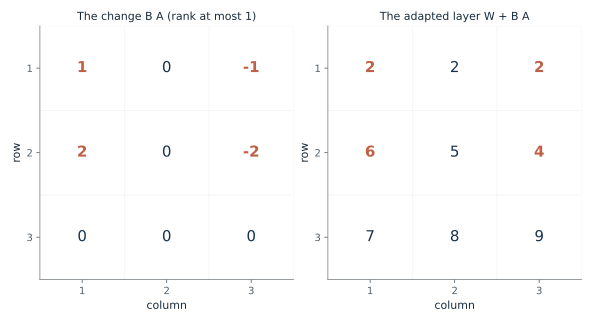
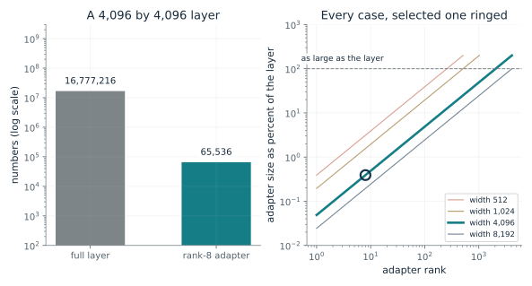
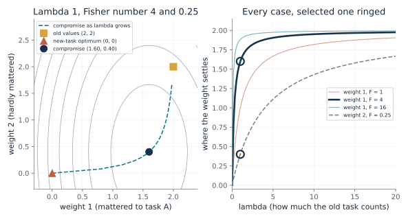
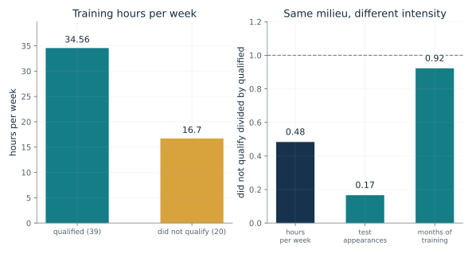
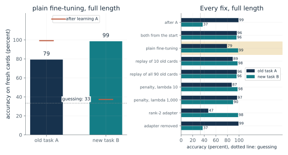

What does a column times a row add to a layer?
From Chapter 27, Changing the weights on purpose is routine, and a small adapter makes it cheap
A layer W is the 3 by 3 grid with top row (1, 2, 3). An adapter adds the column (1, 2, 0) times the row (1, 0, -1). What is the adapted layer, and how many numbers did the adapter hold?
To multiply a column by a row, multiply each number in the column by the whole row. The result has the same shape as W, so the two add. The change has rank at most r, the width of B and A. At width 1 every row of the change is a multiple of one row.
Predict first: Predict the top row of W plus B A, and whether a rank-2 adapter on this 3 by 3 layer holds fewer numbers than the layer.

Adapter rank r: 1
What happens: The rows of B A are the row (1, 0, -1) unchanged, doubled, and zeroed, so the top row of W becomes (2, 2, 2). The rank-1 adapter holds 6 numbers against 9. At rank 2 it holds 12, more than the layer: an adapter saves numbers only when its rank is below half the width.
With rank 1 the adapter holds 6 numbers, fewer than the 9 in the full 3 by 3 layer. The top row of W becomes (2, 2, 2) and the change has rank 1. An adapter saves numbers only when its rank is below half the layer width.
- Top row of W + B A
- 2, 2, 2
- Rank of B A
- 1
- Numbers in the adapter (B and A)
- 6
- Numbers in the full layer
- 9
A small adapter lets a company store a change as two thin grids instead of a full copy. The saving depends on the layer width and the adapter rank, which the next demonstration sizes at real scale.
This is a specification of how a LoRA update is built, an arithmetic identity rather than a model of behavior. Whether a task needs only a low-rank change is a hypothesis about tasks.
Show the calculation
Rank 1: (1, 2, 0) x (1, 0, -1). Each row of a column-by-row product is one entry of the column times the whole row. Numbers trained: 2 x 3 x 1 = 6.
The equations and symbols
- W
- the original layer, d rows by k columns, kept frozen
- B
- a tall thin grid, d rows by r columns
- A
- a wide thin grid, r rows by k columns
- r
- the adapter width, an upper bound on the rank of the change
A frozen W and a trained B and A, with the change to the layer built from their product. The 3 by 3 case is too small for an adapter to save much; it is shown to make the product visible.
Check your understanding: With B = (1, 2, 0) and A = (1, 0, -1), what are the second and third rows of B A, and what are the second and third rows of W plus B A?
Book source: Chapter 27, Changing the weights on purpose is routine, and a small adapter makes it cheap. Illustration C27-D01. Formula. Book formula and constructed example (the chapter's rank-1 case: B = (1, 2, 0), A = (1, 0, -1), W with top row (1, 2, 3), result top row (2, 2, 2)). Ranks 2 and 3 add column-and-row pairs chosen by this companion; the chapter gives only rank 1. No simulation or data is used.
How small is a rank-8 adapter on a real layer?
From Chapter 27, Changing the weights on purpose is routine, and a small adapter makes it cheap
A square layer with 4,096 rows holds over sixteen million numbers. How many numbers does a rank-8 adapter hold, and when would an adapter stop saving anything?
The thin grid B has d rows and r columns and A has r rows and d columns, so together they hold 2 d r numbers. Dividing by the d squared numbers in the layer leaves 2r over d. That is small when r is much less than d.
Predict first: Predict the share for a 4,096-wide layer at rank 8, and the rank at which the adapter becomes as large as the layer.

Layer width d: 4096 · Adapter rank r: 8
What happens: A 4,096 by 4,096 layer holds 16,777,216 numbers and a rank-8 adapter holds 65,536, which is 0.39 percent, or 1 in 256. The adapter would be as large as the layer at rank 2,048, half the width.
A 4,096 by 4,096 layer holds 16,777,216 numbers. A rank-8 adapter holds 65,536, which is 0.391 percent. The adapter stops saving anything at rank 2,048, half the width.
- Numbers in the full layer
- 16,777,216
- Numbers in the adapter
- 65,536
- Adapter share of the layer
- 0.391 percent (1 in 256)
- Rank at which the adapter is as large as the layer
- 2,048
A company that wanted one fine-tuned copy per customer would store a full copy each time. An adapter makes the saved difference small, though the protection of the old skill comes from keeping the original separate, not from the size.
The count is an arithmetic identity. How much old skill a small adapter protects is an empirical question, and the chapter's studies disagree by domain.
Show the calculation
Full layer: 4,096 x 4,096 = 16,777,216. Adapter: B has 4,096 x 8 and A has 8 x 4,096, so 2 x 4,096 x 8 = 65,536. Share = 2 x 8 / 4,096 = 0.003906.
The equations and symbols
- d
- the layer width (rows and columns of a square layer)
- r
- the adapter rank
- 2 d r
- numbers in B (d by r) plus numbers in A (r by d)
A single square layer, with the adapter counted as the two thin grids. Real models have many layers and adapt only some of them, so the saving for a whole model depends on which layers are adapted.
Check your understanding: How many numbers does a rank-16 adapter hold on a 1,024 by 1,024 layer, and what share of the layer is that?
Book source: Chapter 27, Changing the weights on purpose is routine, and a small adapter makes it cheap. Illustration C27-D02. Formula. Book arithmetic: the chapter's 4,096 by 4,096 layer with 16,777,216 numbers and a rank-8 adapter of 65,536, about 0.4 percent. The other widths and ranks are this companion's variations. The LoRA paper's measured savings on GPT-3 are not computed here.
How far does each weight move when a penalty guards the old task?
From Chapter 27, New training can wipe out old skill, and a penalty can slow the loss
Both weights sit at 2 after task A. Task B alone would pull both to 0. The first weight mattered to A (Fisher number 4) and the second hardly did (0.25). With lambda 1, where does each weight settle?
Each weight is pulled two ways: the new task pulls it toward 0 with strength 1, and the penalty pulls it back to 2 with strength lambda times its Fisher number. The weight settles at the weighted average of the two targets, each counted by its strength.
Predict first: Predict which weight moves more and by roughly how much, then predict where both settle if lambda is raised to 20.

Lambda: 1.0 · Fisher number of weight 1: 4.0
What happens: The weight that mattered settles at 1.6 and the one that hardly mattered at 0.4. Staying at (2, 2) costs 4.00, moving to (0, 0) costs 8.50 (all of it the penalty), and the compromise costs 2.00. A larger lambda keeps both nearer 2.
At lambda 1 the weight that mattered (Fisher number 4) settles at 1.6, moving 0.4 from 2, and the weight that hardly mattered settles at 0.4, moving 1.6. A larger lambda keeps both nearer 2.
- Weight 1 settles at
- 1.6
- Weight 2 settles at
- 0.4
- Total cost at (2, 2) and at (0, 0)
- 4 and 8.5
- Total cost at the compromise
- 2
The penalty slows the loss of an old skill by making the weights that mattered stiff. The price is new skill: with large lambda the new task is served less. It also needs two stored numbers per weight.
A short-lived tag marks a synapse in rat brain slices, and the chapter calls the likeness to this penalty its own analogy, not a claim in either paper.
A specification: the penalty is a spring on each weight, stiff where the Fisher number is large.
Show the calculation
Position = (lambda F x 2) / (1 + lambda F). Weight 1: (4 x 2) / (1 + 4) = 1.6. Weight 2: (0.25 x 2) / (1 + 0.25) = 0.4. Cost = new-task loss 1.36 + penalty 0.64 = 2.
The equations and symbols
- L_B
- the loss on the new task alone, here (theta_1^2 + theta_2^2) / 2
- theta*_A,i
- weight i after learning task A (2 for both)
- F_i
- the Fisher number: how sensitive the old task is to weight i
- lambda
- how much the old task counts; 0 ignores it and a large value pins the weights
Two weights, a quadratic new-task loss and a diagonal penalty. The authors tested the method on shuffled digits and Atari games, not on large language models, and note it underestimates how uncertain the weights are.
Check your understanding: With lambda 1 and Fisher numbers 4 and 0.25, show that weight 2 settles at 0.4.
Book source: Chapter 27, New training can wipe out old skill, and a penalty can slow the loss. Illustration C27-D03. Formula. Book formula (elastic weight consolidation, Kirkpatrick and colleagues 2017) and the chapter's constructed two-weight example: old values 2 and 2, Fisher numbers 4 and 0.25, lambda 1, giving 1.6 and 0.4 with total cost 2.00. The other lambdas and the first Fisher number are this companion's variations. The weighted-average rule is exact for this quadratic. No simulation.
What did the taxi trainees' training look like, and what could the scan show?
From Chapter 27, Chapter 27: Learning After Training
Of 79 men starting the training for London taxi licensing, 39 qualified and 20 who returned did not. The qualified men showed more gray matter in the back of the hippocampus. How different was the training of the two groups?
Each bar is a group mean from the study's Table 1. The ratio on the right divides the not-qualified mean by the qualified mean. Months of training are nearly equal, so the group difference the study reports is in hours per week and in test appearances. These are measures of how intense the training was, not of effort itself.
Predict first: Before choosing a measure, predict which of the three (months of training, hours per week, test appearances) was most similar between those who qualified and those who did not.

Which measure: hours
What happens: Total months of training were about the same (38.8 and 35.8), but the men who did not qualify trained 16.70 hours a week against 34.56, about half, and made 2.60 test appearances against 15.64. The authors argue the gray-matter change came from acquiring the map, not from the effort of trying, because the men who failed studied the same streets. They leave open whether people who qualify differ from the start.
On training hours per week, the men who did not qualify had 16.7 against 34.56 for those who did, a ratio of 0.48. Total months of training were similar (38.8 against 35.8), while weekly hours and appearances were far lower.
- Qualified
- 34.56 hours per week
- Did not qualify
- 16.7 hours per week
- Ratio, not qualified to qualified (companion's arithmetic)
- 0.48
- Cohort
- 79 started; 59 returned (39 and 20); 31 comparison men
This book reads the taxi study as one of the better designs, because of the men who studied and failed. The scan result is evidence that an adult brain can keep changing with use, not evidence of how learning works at the cell level.
Gray matter in the posterior hippocampi rose in the qualified men only, and the qualified men did worse on delayed recall of a complex figure. The study did not test whether the hippocampal change caused the drop. The mathematics of a brain is a model, and this is a reported structural result, not a model.
Show the calculation
Ratio = 16.7 / 34.56 = 0.483. Cohort check: 39 + 20 + 20 who did not return = 79 at the first scan.
The equations and symbols
- qualified
- the 39 trainees who qualified and returned for the second scan
- did not qualify
- the 20 trainees who did not qualify and returned
- ratio
- this companion's own descriptive ratio of the two group means
An MRI scan measures how much tissue sits in a region and does not show which cells changed or whether connections did. The study covers only men, one city and one skill. A 2013 review questioned whether the reported analysis established a difference in change between groups. The authors leave open whether people who qualify differ from the start in how readily the hippocampus changes.
Check your understanding: Why does the similar total training time not by itself show that the training was equally intense in the two groups?
Book source: Chapter 27, Chapter 27: Learning After Training. Illustration C27-D04. Reported result. Reported values quoted in the chapter and its source note from Woollett and Maguire (2011): 79 trainees at the first scan, 59 returned (39 qualified, 20 not), 20 did not return, 31 comparison men; Table 1 training figures: total training time 38.8 months (qualified) against 35.8 (not qualified), hours per week 34.56 against 16.70, appearances 15.64 against 2.60. The ratios are this companion's arithmetic. No simulation or model is used here.
In a toy network, what does each fix save, and what does it cost?
From Chapter 27, The build: in a small toy, replay and a penalty protected the old task, and a first-layer adapter did not
A small network learns task A, is trained on task B (the same cards with the 16 measurements shuffled), and forgets A. Which of replay, a penalty and a small adapter protects A, and at what price?
After learning A the network scores about 99 on A and 37 on B. Plain training on B for 1,500 updates reaches about 99 on B but drops A to about 79. Each fix changes the training: replay adds old cards, the penalty pulls weights toward their old values, and the adapter changes only a small add-on.
Predict first: Predict whether a small adapter keeps task A better or worse than plain fine-tuning, and what happens to A when the adapter is removed.

Which fix: plain · How long to train on B: full length
What happens: The rank-2 adapter learns task B (about 98 percent) but leaves task A at about 47 percent, worse than plain fine-tuning at about 79. A small number of trained weights is not a small change: the adapter's change to the first layer was about twice plain fine-tuning's. Removing the adapter brings back the original network exactly, with A near 99 and B near 37. That holds by construction, since the original weights were frozen, so it checks the code and is not a finding.
Plain fine-tuning (full length) leaves task A at 79 percent and task B at 99. Before B, A was 99 and B 37. This is the average of 20 seeded versions of a toy network, a companion rerun of the chapter's script, not a model of a real system.
- Old task A
- 79 percent
- New task B
- 99 percent
- Change on A from before B
- -20 points
- Extra to store
- nothing extra
Replay needs the old data, the penalty trades new skill for old, and the adapter's gain is that it can be taken off. The chapter's comparison of a stored note, an adapter and retraining with old examples is a proposal that nobody has tested.
The stored old cards play the part that replayed memories play in the brain proposal. The brain is not known to keep a verbatim copy, and the toy does not test sleep replay.
A constructed network and a gradient-descent specification. Interleaving old cards helped in the toy in the same direction as the 1995 simulations the chapter cites, in a different network.
Show the calculation
Accuracy is the share of 900 fresh cards sorted correctly, averaged over 20 random versions (seeds 0 to 19); guessing is 33 percent. Network: 16 inputs, 12 tanh units, 3 outputs, 243 weights. 1,500 updates per stage at learning rate 0.2.
The equations and symbols
- accuracy
- the share of 900 fresh cards sorted correctly; guessing is one third
- replay
- mixing some old task-A cards into the task-B training
- penalty
- the elastic weight consolidation penalty of the previous demonstration, with lambda 10 or 1,000
- adapter
- a rank-2 add-on to the first layer, 56 numbers, with the rest frozen
Task B reshuffles every input, a demanding case for a first-layer adapter. The size of the forgetting depends on how long training runs: the early-stop version ends the B stage once 95 percent of its 90 training cards are sorted correctly, and plain fine-tuning then loses far less. The toy does not show that real adapters forget more, and the chapter's own Llama-2 source found the opposite in code.
Check your understanding: In the full-length setting, which fix that still learns task B leaves old task A highest, and what does it cost on task B?
Book source: Chapter 27, The build: in a small toy, replay and a penalty protected the old task, and a first-layer adapter did not. Illustration C27-D05. Simulation. The chapter's own small simulation (its script toy_checks_27.py), ported here with the same protocol: 16 inputs, 12 tanh units, 3 outputs, 243 weights; 90 training cards per task, 900 test cards; learning rate 0.2; 1,500 updates per stage; 20 seeded versions (seeds 0 to 19), averaged. It is the book's analysis, not a published study and not a model of a real system. Replay uses evenly spaced old cards.
Mathematical illustrations use the book's formulas with disclosed small examples. Each interactive choice shows a result computed from the same calculations as the chapter notebook. A simulation is not a measurement, and for a brain the mathematics is a model: a picture illustrates a result, and the assumptions determine its scope. Review copy, brain-computer partnership revision of 1 november 2026.